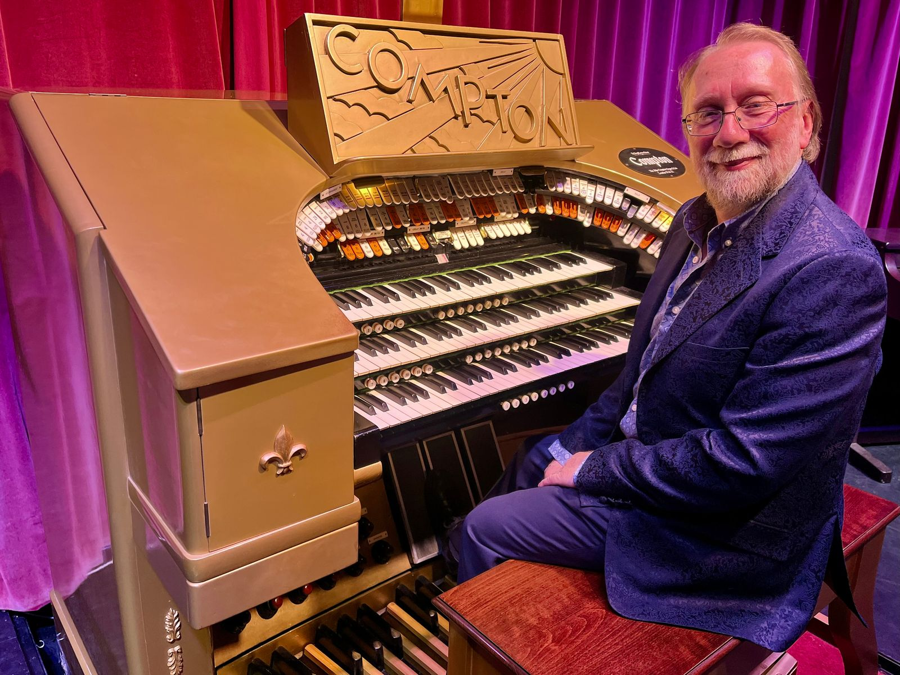
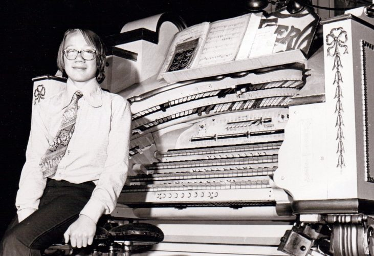

Composer & Pianist
Andy
Quin
Production Music · Jazz Piano · Theatre Organ

About
A life in sound
Born in London in 1960, Andy Quin is one of the world's most prolific and versatile production music composers — and a celebrated jazz pianist and theatre organist.
Not from a musical family, Andy turned down a scholarship to the Royal College of Music in favour of a broader path: a degree in Music and Electronics at Keele University, a pioneering role in computer sampling on the Fairlight CMI, and a forty-year partnership with De Wolfe Music whose catalogue has reached productions from Boardwalk Empire to Coronation Street.
Away from the studio he accompanies silent films live on some of Europe's finest Wurlitzer organs — those who have seen him play describe a technique to rival Art Tatum and Oscar Peterson.
Get in touchThe journey
Six decades at the keyboard

-
1960
Born in London
-
1964
First notes at the piano, aged four
-
1979
At the frontier of computer sampling on the Fairlight CMI
-
1984
Mirage — released as DWCD 0001, the first CD issued by the world's first music library
-
2023
Production Music Award for his contribution to the industry
-
Today
80+ albums, 1,000+ published works, thousands of broadcasts a year
Selected credits
Works & Credits
-
01
Mirage
Andy's debut album for De Wolfe Music, commissioned in 1984 and re-released the following year as DWCD 0001 — the first ever CD issued by the world's first music library.
-
02
Boardwalk Empire, Better Call Saul & Supernatural
Library music featured in some of the most acclaimed American drama and genre series of the past two decades, broadcast to audiences of tens of millions worldwide.
-
03
Coronation Street & Holby City
A long association with British television, with music heard in many of the UK's most-watched programmes across several decades.
-
04
After Eight & Oxo Family
Composer behind some of Britain's most iconic television advertising campaigns of the 1980s, including the celebrated After Eight ad featuring Einstein, Monroe and Liberace.
-
05
Victoria & Abdul, Widows & Absolutely Fabulous: The Movie
Music featured in major British and Hollywood film productions across drama, thriller and comedy — and in the Terrence Malick film trailer for To the Wonder.
-
06
Theatre Organ & Silent Film
A celebrated theatre organist, Andy performs live accompaniments to classic silent films on some of Europe's finest Wurlitzer organs.
"One of the most versatile, prolific and successful production music composers in the world."
— De Wolfe Music
"A true virtuoso in the mould of Art Tatum and Oscar Peterson, with a stride technique to match."
— Music industry commentary
"A pioneer of computer sampling who helped define the sound of British television in the 1980s."
— Production Music Awards, 2023
Watch
In performance
Live
Upcoming performances
For theatre organ and silent film bookings, get in touch.
Get in touch
Commissions & Enquiries
For commissions, performance enquiries, theatre organ bookings, or press requests, please use the form or visit his website directly.
andyquinmusic.comLibrary music enquiries via De Wolfe Music at dewolfemusic.com.